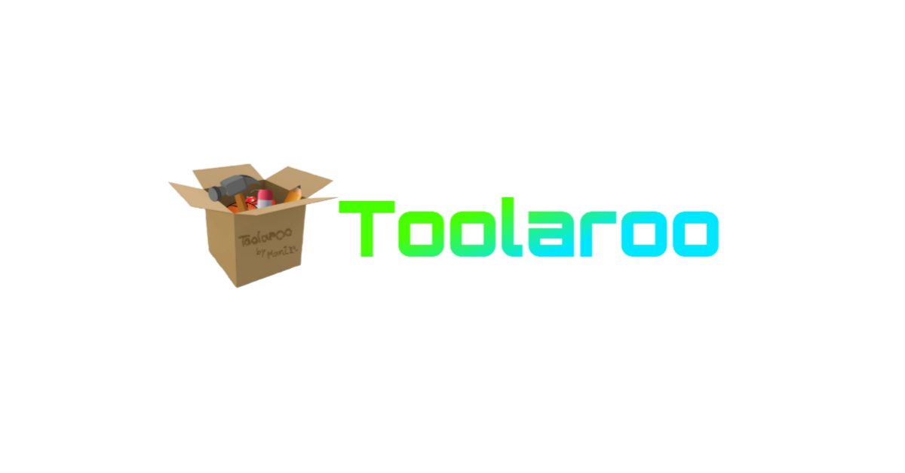

Advertisement
LocalStorage Viewer
Add New Item
Advertisement

What is QR generator?
A QR code generator is a tool that allows users to create QR codes, which are two-dimensional barcodes that can store various types of information, such as URLs, text, or contact details. These codes can be scanned by smartphones or QR code readers to quickly access the stored information without needing to manually type anything.
What You Can Do on Toolaroo's QR generator:
- Convert Any Text to QR Code: Input any text (like a message, address, or note) and get a scannable QR code.
- Quick Sharing: Share the QR code with others, allowing them to view the text instantly by scanning it with their phones.
- No Need to Type: Instead of typing out long text, users can just scan the QR code to access the information.
- Simple & Easy: The tool is designed to be simple, so anyone can generate QR codes quickly without any hassle.
Why QR generator?
This QR Generator is free, fast, mobile-friendly, and doesn’t ask for sign-ups. Perfect for school, office, and personal productivity. Built by Maniruz Zaman with focus on simplicity & usefulness.
Explore, Convert, Calculate, Copy — All in One Place!
We’re growing daily. Bookmark us, share with friends, and watch for updates!
Recommended Resources
Check out these top resources: